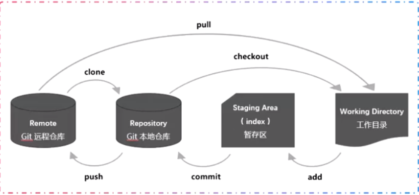

<!DOCTYPE html>
<html lang="en">

<head>
  <meta charset="utf-8" />
    
  <meta name="viewport" content="width=device-width, initial-scale=1, maximum-scale=1" />
  <title>
    Git --- 概述篇 |  “鼠”于Huafu的“2”！
  </title>
  
  <link rel="shortcut icon" href="https://huafuhub.github.io/blog/favicon.ico" />
  
  <link rel="stylesheet" href="/blog/css/style.css">
  <script src="/blog/js/pace.min.js"></script>

  

  

<link rel="alternate" href="/blog/atom.xml" title="“鼠”于Huafu的“2”！" type="application/atom+xml">
</head>

</html>

<body>
  <div id="app">
    <main class="content">
      <section class="outer">
  <article id="post-GITa" class="article article-type-post" itemscope
  itemprop="blogPost" data-scroll-reveal>

  <div class="article-inner">
    
    <header class="article-header">
       
<h1 class="article-title sea-center" style="border-left:0" itemprop="name">
  Git --- 概述篇
</h1>
  

    </header>
    

    
    <div class="article-meta">
      <a href="/blog/2020/01/06/GITa/" class="article-date">
  <time datetime="2020-01-05T16:00:00.000Z" itemprop="datePublished">2020-01-06</time>
</a>
      
    </div>
    

    
    
    <div class="tocbot"></div>


    

    <div class="article-entry" itemprop="articleBody">
      


      

      
      <h1 id="一、分布式版本控制工具"><a href="#一、分布式版本控制工具" class="headerlink" title="一、分布式版本控制工具"></a>一、分布式版本控制工具</h1><h2 id="（一）使用"><a href="#（一）使用" class="headerlink" title="（一）使用"></a>（一）使用</h2><h3 id="1-初始化本地仓库"><a href="#1-初始化本地仓库" class="headerlink" title="1.初始化本地仓库"></a>1.初始化本地仓库</h3><blockquote>
<p>git init</p>
</blockquote>
<h3 id="2-创建秘钥、查看、配置"><a href="#2-创建秘钥、查看、配置" class="headerlink" title="2.创建秘钥、查看、配置"></a>2.创建秘钥、查看、配置</h3><blockquote>
<p>ssh-keygen<br>cd ~/.ssh<br>ls</p>
</blockquote>
<ul>
<li>copy id_rsa.pub into gitHub/Settings/SSH and GPG keys/Key</li>
</ul>
<h3 id="3-关联远程仓库"><a href="#3-关联远程仓库" class="headerlink" title="3.关联远程仓库"></a>3.关联远程仓库</h3><blockquote>
<p>git remote add origin <a href="https://github.com/HuafuHub/myTest.git" target="_blank" rel="noopener">https://github.com/HuafuHub/myTest.git</a></p>
</blockquote>
<h3 id="4-拉取远程仓库"><a href="#4-拉取远程仓库" class="headerlink" title="4.拉取远程仓库"></a>4.拉取远程仓库</h3><blockquote>
<p>git pull –rebase origin master</p>
</blockquote>
<h1 id="二、常用命令"><a href="#二、常用命令" class="headerlink" title="二、常用命令"></a>二、常用命令</h1><table>
<thead>
<tr>
<th align="left">命令</th>
<th align="left">含义</th>
<th align="left">备注</th>
</tr>
</thead>
<tbody><tr>
<td align="left">mkdir dirname</td>
<td align="left">创建文件夹</td>
<td align="left"></td>
</tr>
<tr>
<td align="left">cd dirname</td>
<td align="left">进入文件夹</td>
<td align="left"></td>
</tr>
<tr>
<td align="left"><font color=green>git init</td>
<td align="left">创建版本库</td>
<td align="left"></td>
</tr>
<tr>
<td align="left">ls -ah</td>
<td align="left">查看隐藏文件</td>
<td align="left"></td>
</tr>
<tr>
<td align="left">git config –list</td>
<td align="left">查看配置文件</td>
<td align="left"></td>
</tr>
<tr>
<td align="left">git config –global user.name ‘huafu’</td>
<td align="left">配置用户名</td>
<td align="left"></td>
</tr>
<tr>
<td align="left">git config –global user.email ‘1030363645@qq.com’</td>
<td align="left">配置邮件地址</td>
<td align="left"></td>
</tr>
<tr>
<td align="left">git remote add origin url</td>
<td align="left">关联远程仓库</td>
<td align="left"></td>
</tr>
<tr>
<td align="left">git remote rename oldname newname</td>
<td align="left">重命名远程仓库</td>
<td align="left"></td>
</tr>
<tr>
<td align="left">git remote -v</td>
<td align="left">查看远程仓库地址</td>
<td align="left"></td>
</tr>
<tr>
<td align="left">git remote</td>
<td align="left">查看远程仓库名</td>
<td align="left"></td>
</tr>
<tr>
<td align="left"><font color=green>git status</td>
<td align="left">查看文件状态</td>
<td align="left"></td>
</tr>
<tr>
<td align="left"><font color=green>git add <font color=red>file</td>
<td align="left">从工作区添加至暂存区</td>
<td align="left">单个文件</td>
</tr>
<tr>
<td align="left"><font color=green>git add <strong><font color=red>.</strong></td>
<td align="left">从工作区添加至暂存区</td>
<td align="left">整个当前目录的文件</td>
</tr>
<tr>
<td align="left"><font color=green>git commit <font color=red>-m ‘des’</td>
<td align="left">从暂存区提交至本地仓库</td>
<td align="left"></td>
</tr>
<tr>
<td align="left"><font color=green>git checkout <font color=red>– flie</td>
<td align="left">恢复到暂存区或本地仓库同步状态</td>
<td align="left"></td>
</tr>
</tbody></table>



      
      <!-- 打赏 -->
      
        <div id="reward-btn">
          打赏
        </div>
        
    </div>
    <footer class="article-footer">
      <a data-url="https://huafuhub.github.io/blog/2020/01/06/GITa/" data-id="ck5m56qge0002hksuhzv59qed"
        class="article-share-link">分享</a>
      
    </footer>

  </div>

  
  
  <nav class="article-nav">
    
      <a href="/blog/2020/01/07/WEBPACKa/" class="article-nav-link">
        <strong class="article-nav-caption">上一篇</strong>
        <div class="article-nav-title">
          
            Webpack --- 应用篇
          
        </div>
      </a>
    
    
      <a href="/blog/2020/01/05/NETa/" class="article-nav-link">
        <strong class="article-nav-caption">下一篇</strong>
        <div class="article-nav-title">NET --- 概述篇</div>
      </a>
    
  </nav>


  

  
  
<!-- valine评论 -->
<div id="vcomments-box">
    <div id="vcomments">
    </div>
</div>
<script src="//cdn1.lncld.net/static/js/3.0.4/av-min.js"></script>
<script src='https://cdn.jsdelivr.net/npm/valine@1.3.10/dist/Valine.min.js'></script>
<script>
    new Valine({
        el: '#vcomments',
        notify: false,
        verify: false,
        app_id: '',
        app_key: '',
        path: window.location.pathname,
        avatar: 'mp',
        placeholder: '给我的文章加点评论吧~',
        recordIP: true
    });
    const infoEle = document.querySelector('#vcomments .info');
    if (infoEle && infoEle.childNodes && infoEle.childNodes.length > 0) {
        infoEle.childNodes.forEach(function (item) {
            item.parentNode.removeChild(item);
        });
    }
</script>
<style>
    #vcomments-box {
        padding: 5px 30px;
    }

    @media screen and (max-width: 800px) {
        #vcomments-box {
            padding: 5px 0px;
        }
    }

    #vcomments-box #vcomments {
        background-color: #fff;
    }

    .v .vlist .vcard .vh {
        padding-right: 20px;
    }

    .v .vlist .vcard {
        padding-left: 10px;
    }
</style>

  

  
  
  

</article>
</section>
      <footer class="footer">
  <div class="outer">
    <ul class="list-inline">
      <li>
        &copy;
        2020
        Huafu Li
      </li>
      <li>
        
          Powered by
        
        
        <a href="https://hexo.io" target="_blank">Hexo</a> Theme <a href="https://github.com/Shen-Yu/hexo-theme-ayer" target="_blank">Ayer</a>
        
      </li>
    </ul>
    <ul class="list-inline">
      <li>
        
        
        <ul class="list-inline">
  <li>PV:<span id="busuanzi_value_page_pv"></span></li>
  <li>UV:<span id="busuanzi_value_site_uv"></span></li>
</ul>
        
      </li>
      <li>
        <!-- cnzz统计 -->
        
        <script type="text/javascript" src='https://s9.cnzz.com/z_stat.php?id=1278069914&amp;web_id=1278069914'></script>
        
      </li>
    </ul>
  </div>
</footer>
    <div class="to_top">
        <div class="totop" id="totop">
  <i class="ri-arrow-up-line"></i>
</div>
      </div>
    </main>
    
    <aside class="sidebar">
      
        <button class="navbar-toggle"></button>
<nav class="navbar">
  
  <div class="logo">
    <a href="/blog/"></a>
  </div>
  
  <ul class="nav nav-main">
    
    <li class="nav-item">
      <a class="nav-item-link" href="/blog/">主页</a>
    </li>
    
    <li class="nav-item">
      <a class="nav-item-link" href="/blog/archives">目录</a>
    </li>
    
    <li class="nav-item">
      <a class="nav-item-link" href="/blog/about">关于</a>
    </li>
    
    <li class="nav-item">
      <a class="nav-item-link" href="/blog/pictures">相册</a>
    </li>
    
  </ul>
</nav>
<nav class="navbar navbar-bottom">
  <ul class="nav">
    <li class="nav-item">
      
      <a class="nav-item-link nav-item-search"  title="Search">
        <i class="ri-search-line"></i>
      </a>
      
      
      <a class="nav-item-link" target="_blank" href="/blog/atom.xml" title="RSS Feed">
        <i class="ri-rss-line"></i>
      </a>
      
    </li>
  </ul>
</nav>
<div class="search-form-wrap">
  <div class="local-search local-search-plugin">
  <input type="search" id="local-search-input" class="local-search-input" placeholder="Search...">
  <div id="local-search-result" class="local-search-result"></div>
</div>
</div>
      </aside>
      <div id="mask"></div>

<!-- #reward -->
<div id="reward">
  <span class="close"><i class="ri-close-line"></i></span>
  <p class="reward-p"><i class="ri-cup-line"></i>请我喝杯咖啡吧~</p>
  <div class="reward-box">
    
    <div class="reward-item">
      
      <span class="reward-type">支付宝</span>
    </div>
    
    
    <div class="reward-item">
      
      <span class="reward-type">微信</span>
    </div>
    
  </div>
</div>
      <script src="/blog/js/jquery-2.0.3.min.js"></script>
<script src="/blog/js/jquery.justifiedGallery.min.js"></script>
<script src="/blog/js/lazyload.min.js"></script>
<script src="/blog/js/busuanzi-2.3.pure.min.js"></script>

  <script src="/blog/fancybox/jquery.fancybox.min.js"></script>


  <script src="/blog/js/tocbot.min.js"></script>
  <script>
    // Tocbot_v4.7.0  http://tscanlin.github.io/tocbot/
    tocbot.init({
      tocSelector: '.tocbot',
      contentSelector: '.article-entry',
      headingSelector: 'h1, h2, h3, h4, h5, h6',
      hasInnerContainers: true,
      scrollSmooth: true,
      positionFixedSelector: '.tocbot',
      positionFixedClass: 'is-position-fixed',
      fixedSidebarOffset: 'auto',
			onClick: (e) => {
      	document.getElementById(e.target.innerText).scrollIntoView()
      	return false;
    	}
    });
  </script>


<script>
  var ayerConfig = {
    mathjax: false
  }
</script>

<script src="/blog/js/ayer.js"></script>

<script src="https://cdn.jsdelivr.net/npm/jquery-modal@0.9.2/jquery.modal.min.js"></script>
<link rel="stylesheet" href="https://cdn.jsdelivr.net/npm/jquery-modal@0.9.2/jquery.modal.min.css">


<script type="text/javascript" src="https://js.users.51.la/20544303.js"></script>
  
  

  </div>
</body>

</html>